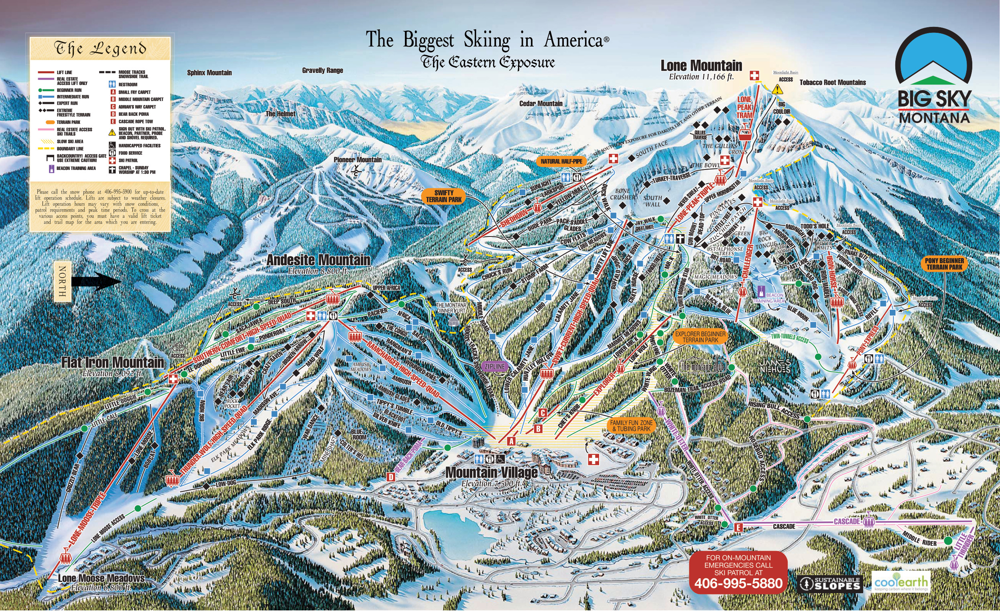
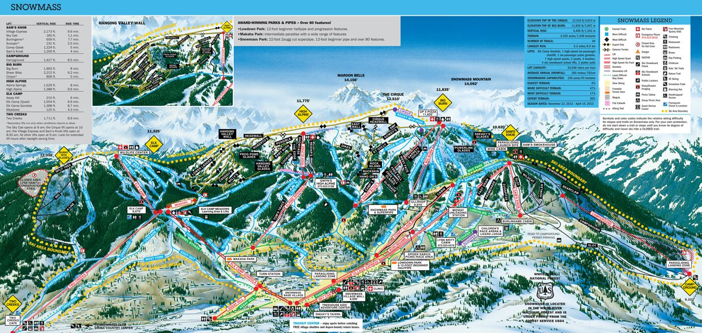

Big Sky is a skier and snowboarder's dream. This mountain has the most skiable terrain in North America and snowfall averages are about 300 inches per season. Unlike mountains in Colorado and California, you will never have a long wait to get on the lift. For a slower pace in life, there’s no better place than Big Sky.
Big Sky Trail map:/

Aspen Snowmass, Colorado
Aspen Snowmass is home to four unique mountains: Aspen Mountain, Aspen Highlands, Buttermilk and Snowmass. The sun shines 300 days a year and the other days are filled with snowfall covering the mountains in beautiful powder. You can ski right down to historic Aspen with over 100 bars and restaurants. Aspen Mountain and Highlands offer the steepest terrain, recommended for skiers and snowboarders looking for a thrill while Buttermilk and Snowmass are more family oriented.
Aspen Snowmass Trail Maps:

Jackson Hole, Wyoming
Jackson Hole is a backcountry paradise. The majority of the mountain is geared towards intermediate to pro riders and skiers. There's more than 2,500 acres of terrain, 116 trails, and an average snowfall of about 460 inches. Snow is deep and the village has a fantastic apres ski vibe.
Jackson Hole Trail Map:
Copper Mountain, Colorado
Copper Mountain is home to the best terrain parks. It’s a park rats dream. Woodward Copper has created the best series of rails and jumps for anyone to have fun on. With 150 trails of skiable terrain, Copper is a great family mountain. It also offers other activities such as zip lining, tubing, ice skating and more.
Copper Mountain Trail Map: